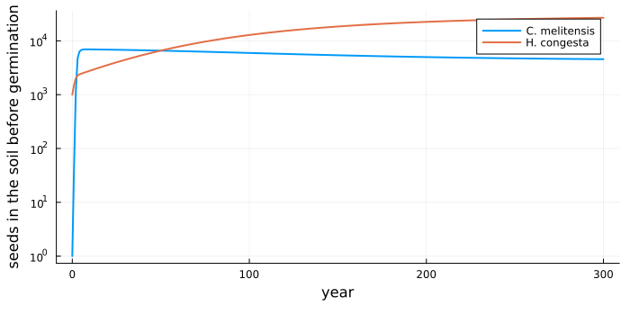
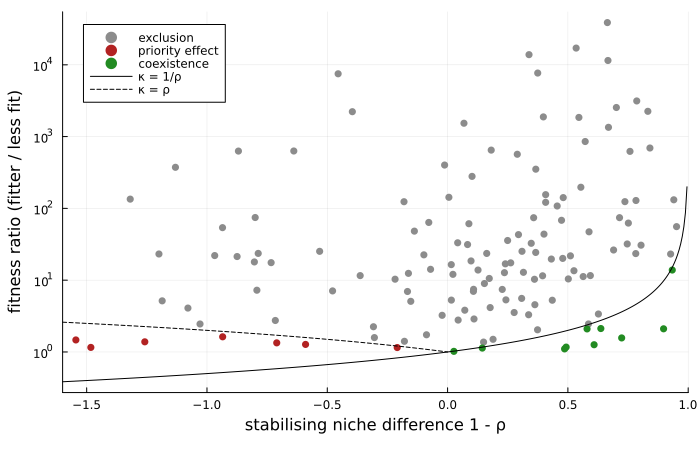

Annual plants with a seed bank: niche and fitness differences
Simon Frost
- Eighteen annuals on serpentine
- Two stages
- The data
- One pair: a star thistle and a tarweed
- Niche and fitness differences
- Simulated outcomes
- All eighteen together: competitive ranks
- What matches and what does not
- References
ENV["GKSwstype"] = "100"
using MatrixCommunityModels
using LinearAlgebra, Printf, Statistics
using PlotsEighteen annuals on serpentine
Godoy, Kraft & Levine (2014) sowed 18 annual plants of the serpentine grassland of the Sedgwick Reserve, California, as focal plants into a density gradient of each species, itself included, and measured their germination, the survival of their seed in the soil, and the seed they set with and without neighbours. From these they built a model of each pair of species competing for a season, and used the coexistence theory of Chesson (2012) to split each pair’s difference into a stabilising niche difference and an average fitness difference. They asked whether close relatives differ less in either. This vignette builds their model from its two stages, reproduces its niche and fitness differences and predicted outcomes for every pair, checks them by simulation, and says where the result departs from what the paper prints.
The model counts N, the seeds of species i in the soil before germination in year t (Godoy et al. 2014, eqns. 1 and 2, after Chesson 1990 and Levine & HilleRisLambers 2009):
\[N_{i,t+1} = (1 - g_i) s_i N_{i,t} + g_i N_{i,t} \frac{\lambda_i}{1 + \sum_j \alpha_{ij} g_j N_{j,t}}.\]
A share g of the seeds germinates; the rest stay in the soil and survive the year with probability s. A germinant sets λ seeds without neighbours, fewer when crowded by the germinants g_j N_j of each species, each weighted by its interaction coefficient α_ij, the per capita effect of a germinant of j on the seed set of i.
Two stages
The model has one number per species, but it hides two kinds of seed: those that stay dormant, which only survive, and those that germinate, which compete and set seed. Counted just after germination, each species has two stages, seeds (the (1 - g) N dormant seeds) and plants (the g N germinants). In a year a dormant seed survives with probability s, and a germinant sets λ / (1 + crowding) seeds; next autumn every seed in the soil, old or new, germinates with probability g. The sum of the two stages is the paper’s N, year by year. Crowding then reads the plants stage of every species directly: it is a pool.
annual_plant builds one species:
plant = annual_plant(:a; g = 0.1, s = 0.5, lambda = 100, alpha = [:a => 0.2])
net = system(plant)[:a]
println(transition_names(net))
to_matrix(net, context(net, [45.0, 5.0], (a_crowding = 1.0,), nothing))[:seed_production, :seed_survival]
2×2 Matrix{Float64}:
0.45 45.0
0.05 5.0Two transitions, seed_survival and seed_production, each with an entry to either stage, and seed production divided by 1 + a_crowding. The matrix has rank one: dormant seeds and germinants differ only in what they bring to the next autumn’s seed pool, s or λ / (1 + crowding) seeds each, and that pool is then split in the same shares. Its one non-zero eigenvalue, (1 - g) s + g λ / (1 + crowding), is the paper’s per capita growth rate.
Each species adds its germinants, weighted by α_ij, to the crowding pool <i>_crowding of every species i it competes with, itself included. Composing species joins their pools.
The data
The authors deposited the vital rates and interaction coefficients on figshare (CC0), and ANNUAL_PLANTS_GODOY_2014 reads them from data/annual_plants:
p = ANNUAL_PLANTS_GODOY_2014
η = annual_plant_eta(p)
println("code species λ g s η")
for (k, code) in enumerate(p.codes)
@printf("%-5s %-27s %9.2f %6.4f %5.3f %8.2f\n", code, p.names[k], p.lambda[k], p.g[k], p.s[k], η[k])
endcode species λ g s η
aghe Agoseris heterophylla 765.92 0.0820 0.560 129.36
agre Agoseris retrorsa 1946.15 0.0820 0.560 328.69
amme Amsinckia menziesii 290.58 0.0473 0.712 42.81
anar Anagallis arvensis 932.01 0.0022 0.152 2.39
ceme Centaurea melitensis 10962.99 0.0359 0.291 547.27
clpu Clarkia purpurea 755.72 0.0045 0.237 4.44
erbo Erodium botrys 271.46 0.0029 0.397 1.32
erci Erodium cicutarium 279.56 0.0109 1.000 279.56
eupe Euphorbia peplus 1069.35 0.0297 0.194 39.07
geca Geranium carolinianum 50.75 0.0458 0.134 2.67
heco Hemizonia congesta 1044.83 0.0154 1.000 1044.83
laca Lasthenia californica 3884.27 0.0043 0.258 22.45
lopu Lotus purshianus 482.09 0.0253 0.386 19.56
lowr Lotus wrangelianus 1457.58 0.0851 0.263 163.23
mepo Medicago polymorpha 271.97 0.0275 0.548 16.01
naat Navarretia atractyloides 2817.50 0.0046 0.114 14.63
pler Plantago erecta 1367.18 0.1153 0.622 350.26
saca Salvia columbariae 3303.36 0.0766 0.339 368.47η = λ g / (1 - (1 - g) s) is the seed produced per seed lost from the soil, to death or germination, without competitors; every species persists alone. The paper’s Appendix S2, Table 3 prints the same rates. The germination fractions agree with it to the three decimals printed and the seed survivals to the two printed, but not the seed set:
λ3 = [784.8, 1946.32, 289.91, 1146.23, 14606.58, 835.17, 295.73, 341.23, 1092.95, 60.92, 991.28, 3689.6,
481.63, 1484.84, 287.72, 2814.96, 1393.34, 3234.13]
for k in sortperm(abs.(p.lambda .- λ3) ./ λ3; rev = true)[1:5]
@printf("%-5s data %9.2f, Table 3 %9.2f (%+.1f%%)\n", p.codes[k], p.lambda[k], λ3[k], 100 * (p.lambda[k] / λ3[k] - 1))
endceme data 10962.99, Table 3 14606.58 (-24.9%)
anar data 932.01, Table 3 1146.23 (-18.7%)
erci data 279.56, Table 3 341.23 (-18.1%)
geca data 50.75, Table 3 60.92 (-16.7%)
clpu data 755.72, Table 3 835.17 (-9.5%)Only AGRE, AMME and LOPU agree within one seed. The deposit is the authors’ own, posted three years after the paper; it may be a later fit. Everything below uses it.
Of the 324 interaction coefficients, 66 are missing (“little confidence in the estimate”, says the deposit). The paper filled a missing coefficient with the product r_i e_j of the responding species’ common competitive response and the other’s common competitive effect, fitted to all the data at once (Appendix S4), whose values it prints (Appendix S2, Table 2). annual_plant_alphas does the same:
A = annual_plant_alphas(p)
println("missing: ", count(isnan, p.alpha), "; on the diagonal: ", count(isnan, diag(p.alpha)))
@printf("ANAR on AGHE, alpha[1, 4], filled with r_AGHE e_ANAR = %.3f × %.3f = %.5f\n",
p.response[1], p.effect[4], A[1, 4])missing: 66; on the diagonal: 0
ANAR on AGHE, alpha[1, 4], filled with r_AGHE e_ANAR = 0.368 × 0.057 = 0.02098One pair: a star thistle and a tarweed
Centaurea melitensis (ceme) and Hemizonia congesta (heco) are both Asteraceae. annual_plant_community composes the two with their coefficients:
c = annual_plant_community(p; codes = (:ceme, :heco))
println(c)
n0 = vcat(annual_plant_state(:ceme, 1.0), annual_plant_state(:heco, 1000.0))
sol = project(c, n0, fill(nothing, 300))
seeds(sp) = vec(sum(sol[sp]; dims = 2))
plot(sol.t, [seeds(:ceme) seeds(:heco)]; label = ["C. melitensis" "H. congesta"], yscale = :log10,
xlabel = "year", ylabel = "seeds in the soil before germination", lw = 2, size = (700, 350))OpenCommunity(ceme, heco; pools = ceme_crowding, heco_crowding)
Starting from one seed, the star thistle invades the tarweed and the two settle together. The equilibrium is where each species’ growth rate is one, 1 + Σ_j α_ij P_j = η_i for the germinants P, a pair of linear equations; Newton’s method on the composed community (periodic_point) finds it and its stability:
i, j = 5, 11
P = A[[i, j], [i, j]] \ (η[[i, j]] .- 1)
e = periodic_point(c, sol.u[end, :], nothing)
@printf("germinants: linear solve %.4f, %.4f; composed nets %.4f, %.4f\n", P..., e.n[2], e.n[4])
@printf("largest multiplier %.4f\n", maximum(abs.(e.multipliers)))germinants: linear solve 154.7638, 452.0666; composed nets 154.7638, 452.0666
largest multiplier 0.9894Niche and fitness differences
For this model, Godoy & Levine (2014) showed that the niche overlap of species i and j is
\[\rho = \sqrt{\frac{\alpha_{ij}\alpha_{ji}}{\alpha_{jj}\alpha_{ii}}},\]
the stabilising niche difference 1 - ρ, and the average fitness ratio
\[\frac{\kappa_j}{\kappa_i} = \frac{\eta_j - 1}{\eta_i - 1}\sqrt{\frac{\alpha_{ij}\alpha_{ii}}{\alpha_{jj}\alpha_{ji}}}\]
(Godoy et al. 2014, eqns. 3 and 4), and that both species invade when rare, so that they coexist, if ρ < κ_j/κ_i < 1/ρ (eqn. 5). That condition is the invasion criterion itself. A species alone settles with (η_j - 1)/α_jj germinants, and a rare species i then grows by (1 - g_i) s_i + g_i λ_i / (1 + α_ij (η_j - 1)/α_jj) a year, which exceeds one exactly when κ_j/κ_i < 1/ρ. The composed nets give the same rate through invasion_growth_rate, with the resident at its equilibrium:
alone(k) = (m = findfirst(==(k), p.codes); annual_plant_state(k, (η[m] - 1) / A[m, m] / p.g[m]))
ce, he = subcommunity(c, :ceme), subcommunity(c, :heco)
pairs = annual_plant_pairs(p)
x = only(filter(x -> x.i === :ceme && x.j === :heco, pairs))
@printf("C. melitensis invading: nets %.12f, formula %.12f\n", invasion_growth_rate(ce, he, alone(:heco), nothing), x.invasion_i)
@printf("H. congesta invading: nets %.12f, formula %.12f\n", invasion_growth_rate(he, ce, alone(:ceme), nothing), x.invasion_j)
@printf("rho %.4f, niche difference %.4f, fitness ratio kappa_heco/kappa_ceme %.4f\n", x.rho, x.niche_difference, x.fitness_ratio)C. melitensis invading: nets 1.736052410649, formula 1.736052410649
H. congesta invading: nets 1.034260520276, formula 1.034260520276
rho 0.3911, niche difference 0.6089, fitness ratio kappa_heco/kappa_ceme 1.2614annual_plant_pairs gives these for all 153 pairs. When ρ > 1 a species limits the other more than itself; neither can then invade the other if their fitnesses are close enough (1/ρ < κ_j/κ_i < ρ), and whichever is commoner wins, a priority effect.
count_outcome(o) = count(x -> x.outcome === o, pairs)
println("coexistence: ", count_outcome(:coexistence), ", exclusion: ", count_outcome(:exclusion),
", priority effect: ", count_outcome(:priority_effect))
println("rho > 1 in ", count(x -> x.rho > 1, pairs), " pairs (",
round(Int, 100 * count(x -> x.rho > 1, pairs) / length(pairs)), "%)")
fitter(x) = max(x.fitness_ratio, 1 / x.fitness_ratio)
println("relaxed criterion 0.9 rho < kappa_i/kappa_j: ", count(x -> 0.9x.rho < 1 / fitter(x), pairs), " pairs")
for x in filter(x -> x.outcome === :coexistence, pairs)
@printf(" %-4s %-4s 1 - rho = %6.3f kappa_j/kappa_i = %7.3f filled %d\n", x.i, x.j, x.niche_difference, x.fitness_ratio, x.filled)
endcoexistence: 10, exclusion: 133, priority effect: 10
rho > 1 in 56 pairs (37%)
relaxed criterion 0.9 rho < kappa_i/kappa_j: 11 pairs
ceme heco 1 - rho = 0.609 kappa_j/kappa_i = 1.261 filled 0
ceme lowr 1 - rho = 0.026 kappa_j/kappa_i = 0.980 filled 0
ceme saca 1 - rho = 0.493 kappa_j/kappa_i = 0.856 filled 0
erci lopu 1 - rho = 0.637 kappa_j/kappa_i = 0.472 filled 0
erci lowr 1 - rho = 0.144 kappa_j/kappa_i = 1.133 filled 1
eupe mepo 1 - rho = 0.486 kappa_j/kappa_i = 1.104 filled 0
eupe naat 1 - rho = 0.724 kappa_j/kappa_i = 1.569 filled 1
heco pler 1 - rho = 0.934 kappa_j/kappa_i = 13.847 filled 0
heco saca 1 - rho = 0.580 kappa_j/kappa_i = 0.477 filled 0
lopu naat 1 - rho = 0.898 kappa_j/kappa_i = 2.102 filled 0The usual picture plots each pair’s fitness ratio, taken as at least one, against its niche difference. Pairs between the curve κ = 1/ρ and the axis coexist; pairs with ρ > 1 (a negative niche difference) between the dashed line κ = ρ and the axis have a priority effect. Twelve pairs, with 1 - ρ from -1.6 down to -7.1, lie off the left edge; all are exclusions or priority effects:
nd = [x.niche_difference for x in pairs]
fr = [fitter(x) for x in pairs]
colour = Dict(:coexistence => :forestgreen, :exclusion => :grey55, :priority_effect => :firebrick)
plt = plot(; xlabel = "stabilising niche difference 1 - ρ", ylabel = "fitness ratio (fitter / less fit)",
yscale = :log10, legend = :topleft, size = (700, 450), xlims = (-1.6, 1))
for o in (:exclusion, :priority_effect, :coexistence)
k = [x.outcome === o for x in pairs]
scatter!(plt, nd[k], fr[k]; label = replace(String(o), "_" => " "), color = colour[o], ms = 4, msw = 0)
end
d = range(-1.6, 0.995; length = 400)
plot!(plt, d, 1 ./ (1 .- d); color = :black, label = "κ = 1/ρ")
plot!(plt, d[d .<= 0], (1 .- d[d .<= 0]); color = :black, ls = :dash, label = "κ = ρ")
plt
Godoy et al. print three summaries of this analysis, and none is reproduced from the deposited data. They find 12 of the 153 pairs predicted to coexist, against 10 here; 18 under the relaxed criterion, against 11; and interspecific effects above intraspecific in 15% of pairs, against ρ > 1 in 37% here. Their Fig. 5 shows the phylogenetic distances of their 12 coexisting pairs: one near 190 million years, five near 260, three near 275 and three near 305, with a mean of 270.58. On the dated tree of their Appendix S3, the 10 pairs here lie at 190.9 (one), 258.2 to 260.4 (five), 274.7 (one) and 308.2 (three), with a mean of 268.8. So the 10 pairs look like 10 of their 12, and the two missing pairs both lie near 275 million years. One candidate is Euphorbia peplus and Lotus purshianus (274.7), the one pair that coexists under the relaxed criterion but not under eqn. 5 here (EUPE invades, LOPU falls short). Neither the way the paper filled pairs with two missing coefficients, nor the seed sets of its Table 3, nor reading the coefficient matrix transposed, gives 12; the differences most likely lie in the coefficients, which the paper does not print.
Three things point to the deposit not being the set of coefficients behind the 2014 paper. It was posted in March 2017 for a later paper (Saavedra et al. 2017, which cites its version 1). In the paper the seed set without neighbours, λ, is fitted in the same model as each target species’ coefficients, and the deposited λ differs from Table 3. And Kraft, Godoy & Levine (2015), on the same experiment, state that only 102 of the 153 pairs could be fitted, and plot those 102 pairs with the same 12 coexisting (their Fig. S3). That figure has many more pairs with large niche differences than these data do, and about a third of its pairs at a niche difference of zero, against the 15% in the 2014 text. These data give 97 pairs with all four coefficients, or 125 if the coefficients estimated at zero count as fitted. Version 1 of the deposit gives 33 coefficients as 0 and 33 as missing; the current version gives all 66 as missing, and that is what is used here. Keeping the zeros gives 17 coexisting pairs, not 12. Neither the raw field data nor the fitting code is public.
Simulated outcomes
The predicted outcomes rest on invasion when rare. To check them by simulation, each species of each pair starts as a single seed against the other at its equilibrium alone, and the composed community is run for 2000 years. The rare species has invaded if it ends with more seeds than it began with:
function invades(i, j)
c = annual_plant_community(p; codes = (i, j))
n0 = vcat(annual_plant_state(i, 1.0), alone(j))
sol = project(c, n0, fill(nothing, 2000))
return sum(sol[i][end, :]) > 1
end
simulated = [(invades(x.i, x.j), invades(x.j, x.i)) for x in pairs]
predicted = [(x.invasion_i > 1, x.invasion_j > 1) for x in pairs]
println("pairs whose simulated invasions match the prediction: ", count(simulated .== predicted), " of ", length(pairs))pairs whose simulated invasions match the prediction: 153 of 153Every pair behaves as predicted, including the slowest: Erodium cicutarium invades Lotus wrangelianus at a rate of 1.00034 a year (its seed bank barely decays, s = 1), and Hemizonia congesta fails to invade Agoseris retrorsa at 0.99927. The coexisting pairs settle at their equilibria, all stable:
for x in filter(x -> x.outcome === :coexistence, pairs)
i, j = findfirst(==(x.i), p.codes), findfirst(==(x.j), p.codes)
P = A[[i, j], [i, j]] \ (η[[i, j]] .- 1)
c = annual_plant_community(p; codes = (x.i, x.j))
n = vcat(annual_plant_state(x.i, P[1] / p.g[i]), annual_plant_state(x.j, P[2] / p.g[j]))
e = periodic_point(c, 1.05 .* n, nothing)
@printf(" %-4s %-4s germinants %8.2f %8.2f largest multiplier %.5f\n", x.i, x.j, e.n[2], e.n[4], maximum(abs.(e.multipliers)))
end ceme heco germinants 154.76 452.07 largest multiplier 0.98940
ceme lowr germinants 227.41 34.36 largest multiplier 0.99567
ceme saca germinants 197.14 350.53 largest multiplier 0.78402
erci lopu germinants 207.26 5.57 largest multiplier 0.99104
erci lowr germinants 24.62 247.81 largest multiplier 0.99967
eupe mepo germinants 10.58 124.45 largest multiplier 0.81917
eupe naat germinants 11.03 6.02 largest multiplier 0.59678
heco pler germinants 46.62 2501.64 largest multiplier 0.99871
heco saca germinants 538.82 92.85 largest multiplier 0.98803
lopu naat germinants 16.65 6.49 largest multiplier 0.54211All eighteen together: competitive ranks
The paper ranked the species by competitive ability in a second way: simulate all 18 together; the species that excludes all others takes the top rank; run again without it; species that coexist share a rank. The coefficients among all 18 are needed, the missing ones filled as above. Here each round runs 20000 years from 100 seeds of each species, and the survivors are those within a factor of 1000 of the most abundant:
function ranks(p; years = 20000)
left, r, out = collect(p.codes), 0, Dict{Symbol, Int}()
while !isempty(left)
r += 1
c = annual_plant_community(p; codes = left)
n0 = reduce(vcat, [annual_plant_state(k, 100.0) for k in left])
sol = project(c, n0, fill(nothing, years))
N = [sum(sol[k][end, :]) for k in left]
top = left[N .> 1e-3 * maximum(N)]
foreach(k -> out[k] = r, top)
filter!(k -> !(k in top), left)
end
return [out[k] for k in p.codes]
end
mine = ranks(p)
# ranks read by eye from the paper's Fig. 2
fig2 = [4, 2, 6, 9, 3, 4, 10, 6, 5, 10, 3, 8, 7, 5, 5, 6, 1, 3]
for k in sortperm(mine)
@printf(" %-4s %-26s here %2d Fig. 2 %2d\n", p.codes[k], p.names[k], mine[k], fig2[k])
end
tiedrank(v) = [mean(findall(==(x), sort(v))) for x in v]
@printf("Spearman correlation of the ranks: %.3f\n", cor(tiedrank(mine), tiedrank(fig2))) heco Hemizonia congesta here 1 Fig. 2 3
pler Plantago erecta here 1 Fig. 2 1
agre Agoseris retrorsa here 2 Fig. 2 2
ceme Centaurea melitensis here 3 Fig. 2 3
saca Salvia columbariae here 3 Fig. 2 3
aghe Agoseris heterophylla here 4 Fig. 2 4
erci Erodium cicutarium here 5 Fig. 2 6
lowr Lotus wrangelianus here 5 Fig. 2 5
amme Amsinckia menziesii here 6 Fig. 2 6
eupe Euphorbia peplus here 7 Fig. 2 5
mepo Medicago polymorpha here 7 Fig. 2 5
lopu Lotus purshianus here 8 Fig. 2 7
naat Navarretia atractyloides here 8 Fig. 2 6
laca Lasthenia californica here 9 Fig. 2 8
clpu Clarkia purpurea here 10 Fig. 2 4
anar Anagallis arvensis here 11 Fig. 2 9
geca Geranium carolinianum here 12 Fig. 2 10
erbo Erodium botrys here 13 Fig. 2 10
Spearman correlation of the ranks: 0.874The order is close to the paper’s but not the same (a rank correlation of 0.87). Both put Plantago erecta first, Agoseris retrorsa second, Centaurea melitensis and Salvia columbariae third and Agoseris heterophylla fourth, and both put the two Geraniaceae and Anagallis arvensis at the bottom. Here Hemizonia congesta survives the first round with P. erecta (the pair coexists, with the largest niche difference of the coexisting pairs, 1 - ρ = 0.93), where the paper puts it third; Clarkia purpurea falls from fourth to tenth; and the order runs to 13 groups here against 10 in the figure, since fewer pairs coexist.
What matches and what does not
Reproduced:
- the model of eqns. 1 and 2 as two-stage nets joined by crowding pools: the seeds of every run agree with the paper’s one-stage recursion written in base R (
test/reference/R/run_annualplants_reference.R) to rounding (about 1e-16), for pairs and for all 18 species; - the niche overlaps, fitness ratios, invasion growth rates and predicted outcomes of all 153 pairs, against the same R code, to about 1e-16; the invasion growth rates of the composed nets equal the formula;
- the predicted outcomes, by simulation of every pair from each species rare, and the coexistence equilibria, all stable;
- the germination fractions and seed survivals of Table 3, at its printed precision.
Not reproduced:
- the seed set without neighbours of Table 3, which differs from the deposited values by up to 25% (Centaurea melitensis);
- the paper’s counts: 12 coexisting pairs (10 here), 18 under the relaxed criterion (11), and 15% of pairs with stronger interspecific than intraspecific effects (37% with
ρ > 1); the phylogenetic distances of the coexisting pairs suggest the 10 are among the paper’s 12; - the competitive ranks of Fig. 2, read by eye, which agree in outline only.
None of these mismatches traces to the model or its code: the equations here and in the R reference follow eqns. 1 to 5 of the paper term by term, and the coefficient matrix is read with rows as the responding species, as the file name says.
The paper’s regressions on phylogenetic distance, and its permutation and bootstrap tests, are not repeated; the phylogenetic distances quoted above were computed from the Newick tree printed in Appendix S3, which is not shipped. The paper was read in full as its accepted manuscript with appendices (CSIC repository); its figures were read from the rendered pages.
References
Chesson, P. (1990). Geometry, heterogeneity and competition in variable environments. Philosophical Transactions of the Royal Society B 330, 165-173.
Chesson, P. (2012). Species competition and predation. In Encyclopedia of Sustainability Science and Technology (ed. R. A. Meyers), pp. 10061-10085. Springer.
Godoy, O. & Levine, J. M. (2014). Phenology effects on invasion success: insights from coupling field experiments to coexistence theory. Ecology 95, 726-736. https://doi.org/10.1890/13-1157.1
Godoy, O., Kraft, N. J. B. & Levine, J. M. (2014). Phylogenetic relatedness and the determinants of competitive outcomes. Ecology Letters 17, 836-844. https://doi.org/10.1111/ele.12289
Kraft, N. J. B., Godoy, O. & Levine, J. M. (2015). Plant functional traits and the multidimensional nature of species coexistence. Proceedings of the National Academy of Sciences USA 112, 797-802. https://doi.org/10.1073/pnas.1413650112
Godoy, O., Kraft, N. J. B. & Levine, J. M. (2017). Dataset Godoy et al. 2014 Ecology Letters. figshare. https://doi.org/10.6084/m9.figshare.4793488.v3 (CC0)
Saavedra, S., Rohr, R. P., Bascompte, J., Godoy, O., Kraft, N. J. B. & Levine, J. M. (2017). A structural approach for understanding multispecies coexistence. Ecological Monographs 87, 470-486. https://doi.org/10.1002/ecm.1263
Levine, J. M. & HilleRisLambers, J. (2009). The importance of niches for the maintenance of species diversity. Nature 461, 254-257.